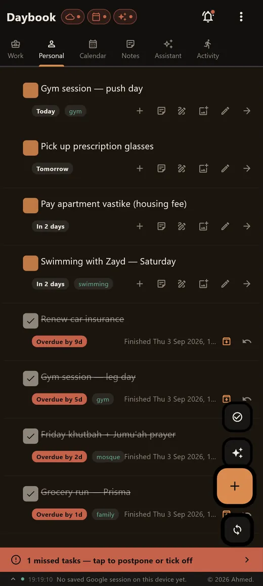
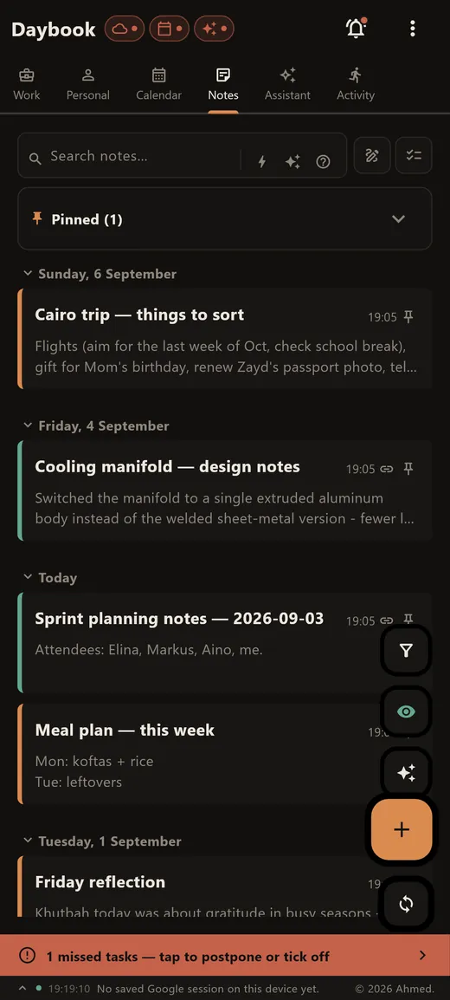
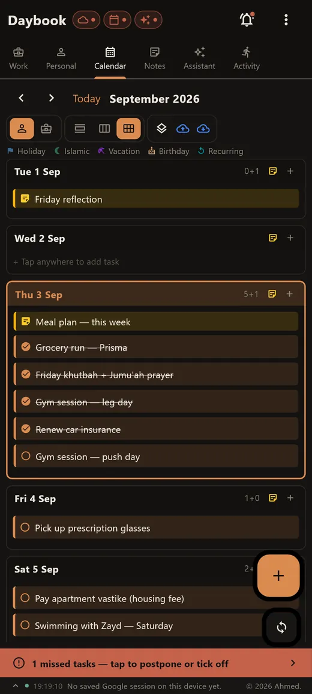
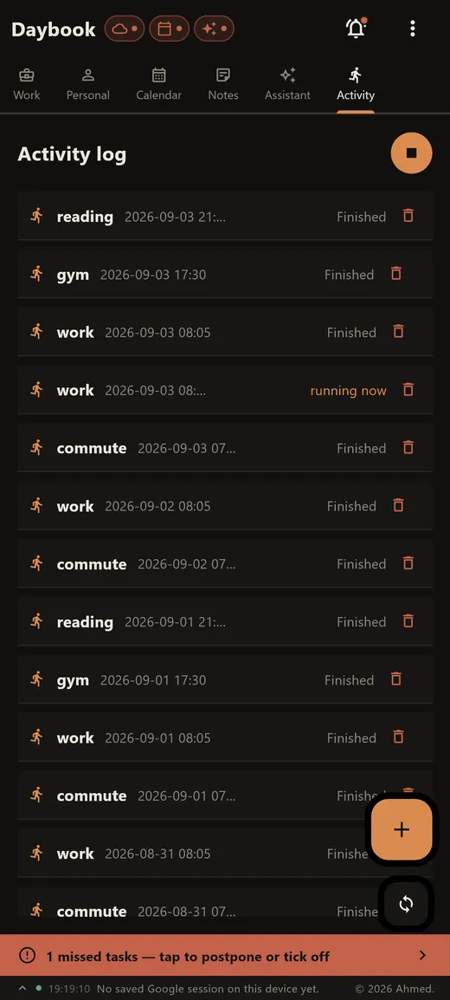

Daybook
Everything about your day, in one place.
Tasks that repeat, notes you can sketch on, the places you go and a log of what you actually did. An assistant is there when you want one.
Free · Android and Windows · Closed beta on Google Play




Six things, one database
Tasks
Work and personal lists, due dates, repeats, subtasks, and a record of what you finished.
Notes
Write, sketch, attach a photo. It stays with the day it belongs to.
Activity log
What you did and where. Fill it in yourself, or let saved places do it for you.
Places
Save somewhere you go often and arrivals get logged without you touching anything.
Dates
Birthdays, recurring events, and the public holidays you choose to import.
Assistant
Ask it to summarise your week or turn a note into a task. Runs on your own free Gemini key.
Four steps cover most of it
Scroll and the phone follows along, or tap a step to jump to it.
Add a task
Give it a due date, a repeat, or split it into subtasks. It saves as you type.
Write a note
Sketch on it or attach a photo. It stays with the day it belongs to.
Check the calendar
Dated tasks, birthdays and any holidays you imported, in one view.
Look back
Save a place once and Daybook logs arrivals there for you.
Tasks
What stays, and what doesn't
Pick anything Daybook handles.
Why Daybook asks for a Google account
Signing in is optional and the app works fully without it. It's there so Daybook can back up to your Drive and write dated tasks into your calendar. Here is every permission it asks for.
Drive backup drive.file
https://www.googleapis.com/auth/drive.file
Uploads a copy of Daybook's database and the images attached to your notes, so you can restore on a new device or keep two in step. This scope reaches only files Daybook created. It can't list or open anything else in your Drive, and the backup sits in your account, not mine.
Calendar sync calendar
https://www.googleapis.com/auth/calendar
Dated tasks you choose to sync appear as events in your own calendar. Notes and the activity log are never written. This is the desktop route. On Android, Daybook writes to the device's own calendar with the ordinary OS permission and no Google account at all, which is what the Play version uses today.
Email and basic profile openid · email · profile
Read once after sign-in, so the app can show you which account is connected. Daybook doesn't read your contacts or your mail.
Tokens are stored on your device alongside the database and used only for the calls above. You can withdraw access at any time at myaccount.google.com/permissions.
What it doesn't do
- No ads, no analytics, no trackers.
- No account to create, and no server of mine holding your entries.
- Nothing leaves the device unless you switch on the feature that sends it.
The privacy policy goes feature by feature, including location, microphone and camera, and says where each one sends data or that it sends none.
Platforms
- Android
- On Google Play as Daybook (
com.MAIAArchitech.daybook). In closed testing — join the test to install it. - Windows
- Desktop build, with an optional pairing link to the phone app.
- Storage
- One SQLite database inside the app's own storage, which other apps on the device can't read.
- Price
- Free.
Join the test
Become a tester Closed beta
Daybook is in closed testing, so Play only shows it to accounts that joined the tester group. Two steps, once, with the Google account your phone uses.
-
1
Join the tester group
Open to anyone, no approval or waiting. Press Join group on the page that opens.
Join the tester group → Rather not leave a page open? Send a blank email to daybook-testers+subscribe@googlegroups.com and you're joined by reply. -
2
Accept the invitation
Sign in with the same account and press Become a tester.
Become a tester → -
3
Install it
The listing opens for your account once the first two are done.

If Play says the app isn't available, the account on your phone usually isn't the one that joined the group. The test is open in six countries so far; if yours isn't one of them, write to me and I'll add it. Google Play is a trademark of Google LLC.